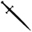

Cutlass Cate's Lesson In Swords
If like me, you have not won the sword fighting lessons with Justin Somper, here is what he has written about it, in Cutlass Cate's words. For sword etequate please see the middle of Tide of Terror, when Connor joins Commodore Kuo's lecture on swordsmanship.

If any of you know more about swords than me you are welcome to send in additions to this page. The quotes in italics are from Demons Of The Ocean by Justin Somper (not in the correct order).The different swords and uses are:
"Now, here's the thing about broadswords," Cate continued. "They're big and they're heavy. This monster's four foot long. When we board an enemy ship, time is of the essence. The broardsword's full of problems. It can get caught in the rigging, for one thing. So here's what we do. We send in Bart and a couple of the other big boys at the front. They go in and chop through the rigging, swinging their swords like windmills. It's all smoke and mirrors, though. They other crew sees these big brutes laying waste to their ship, and they're scared.
[four foot is equivalent to 122cm]
Cate had picked up a smaller sword and removed it from its scabbard. It was about three-quarters the length of the broadsword but much lighter and more delicate.
"This, my friend, is like fighting with a needle." Cate leaped forward, thrusting the sword before her.
[three foot is equivalent to 91.5cm]
She held out the sword to Connor and, taking a deep breath, he slipped his gloved hand through the handle.
"That's it. Notice the swept hilt on this sword. There we are, your whole fist goes through there. It's like a protective cage."
This felt much more comfortable than the broadsword. It was a touch shorter but significantly lighter.
Other swords mentioned in the books are The twin katanas that Cheng Li carries on her back and daisho that the Pirate Academy give the year 2 kids as their first sword.
The parts of the sword are:
She ran her finger along the flat edge of the sword, towards Connor's hand. "The strongest part of the blade is here. It's called the forte."
How to stand and hold the weapons:
"Ah, that looks good. Excellent. Now, hold the blade out flat."
Connor extended his arm.
"Good, Connor," Cate said, smiling. "Now, your hand is pronate, that means facing upwards. Your stance should be soft again, your legs bent. Your weight is even between your feet. Imagine you're playing tennis. You're ready to move quickly in either direction."
"Your feet must never be together. If they are, you'll lose your balance Just move one foot at a time, like me."
If you want to know more.
I had the chance to learn a term of the foil at school taught by our headmistress. Spot the reason why it did not last long, but it is great fun.